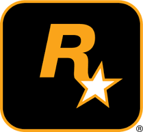

<!DOCTYPE html>
<html lang="es">
<head>
    <article> </article>
        </html>
    <meta charset="UTF-8">
    <meta name="viewport" content="width=device-width, initial-scale=1.0">
    <title>mi pagina</title>

<body bgcolor="green">
<h1><font color="white">Rockstar Games</font></h1>
<font color="white">Rockstar Games es una compañia desarrolladora y publicadora de videos juegos<P></P>
adquirido por el publicador de videosjuegos take-two interactive<p></p>
y creador del motor de videojuegos RAGE.la compañia es internacionalmente<p></p>
conocida por titulos como:<p></p>
</font>
</head>
<ul>
    <li><font color="white">la serie gta</li>
    <li>max payne</li>
    <li>read dead</li>
    
    <h2>El sello Rockstar</h2>
    El sello Rockstar fue fundado en Nueva York, en 1998 por Sam Houser, Terry Donovan, Dan Houser, Jamie King y Gary Foreman.1​ Las oficinas de Rockstar Games están situadas en Broadway, Nueva York, junto a las de Take-Two Interactive. En ellas se encuentran las oficinas centrales internacionales de publicidad, marketing, relaciones públicas y departamentos de desarrollo de productos.2​
    </font>

<h1><font color="white"> Historia</h1>
La etiqueta Rockstar Games fue fundada en diciembre de 1998 por Sam Houser, Dan Houser, Terry Donovan, y Jamie King.3​4​5​6​ Donovan dejó la compañía en enero de 2007, después de una licencia de cuatro meses de ausencia.7​ Fue reemplazado por el ex Capcom, Gary Dale.8​

La sede principal de Rockstar Games se encuentra en Broadway en el barrio NoHo de la ciudad de Nueva York, parte de las oficinas de Take-Two Interactive. Es el hogar de la comercialización, relaciones públicas y departamentos de desarrollo de productos .9​

A partir de febrero de 2014, los títulos de Rockstar Games han vendido más de 250 millones de copias,10​ siendo la mayor franquicia la serie Grand Theft Auto que es el único envíos de al menos 250 millones de dólares a partir de noviembre de 2016.11​ Grand Theft Auto V enviado el mayor número de unidades (por lo menos 75 millones de copias) dentro de la serie historia y convertirse en uno de los videojuegos con más ventas de todos los tiempos.12​13​

En marzo de 2014, Rockstar Games recibió el premio BAFTA de la Academia de becas en los Premios BAFTA de Videojuegos.

<h1>Objetivo</h1>
En octubre, el vicepresidente creativo de Rockstar, Dan Houser, desveló a Famitsu que Rockstar está evitando desarrollar juegos dentro del género de los FPS. "Estamos evitando eso ahora, deliberadamente", dijo, según señala una traducción de 1UP. "Está en nuestro ADN el hecho de evitar lo que otras compañías están utilizando. Supongo que se podría decir que Max Payne 3 se parece mucho a un juego en primera persona pero, en realidad, hay determinados aspectos únicos con respecto a la jugabilidad y las características también, no sólo en la historia. Se trata de ser original con tus videojuegos; tiene que haber algún mensaje de interés. Se podría decir que el objetivo principal de Rockstar es hacer llegar a los jugadores lo que realmente pretendemos hacer". Houser continuó diciendo que "Rockstar ha creado géneros propios con juegos como GTA. No nos apoyamos en los testimonios de ninguna enciclopedia de negocios para hacer lo que hemos hecho. Creo que hemos tenido éxito precisamente porque no nos centramos en las ganancias de la venta del juego que creamos... Si hacemos el tipo de juegos a los que nos gustaría jugar, entonces es cuando creemos que la gente los va a comprar"

<h1>Mision</h1>
Misión de Rockstars
Rockstars tiene como misión principal proveer de servicios altamante tecnológicos que permitan a las empresas incrementar sus ventas y descubrir sus areas de oportunidad en su mercado o nuevos mercados.
<h1>Vision</h1>

Visión de Rockstars
Rockstars es una empresa que intenta romper la brecha digital entre los diversos sectores de los mercados, colocando ala empresa mas cerca que nunca del consumidor final mediante la tecnología. Creemos que ser punta de lanza en el desarrollo tecnológico permitirá a las empresas crecer, nos consolidamos como una empresa que a diez años quiere ser la mas grande proveedora de servicios inteligentes de manejo de mercado ne Latinoamérica.


Un punto de vista Rockstars
Somos la primera y única Agencia Boutique
</font>

<link rel="stylesheet" href="estilos.css">
</ul>
<article></article>


<footer>
<font color="white">publicacion 1/2/2021</font>
</footer>


</article>
</body>
</html>